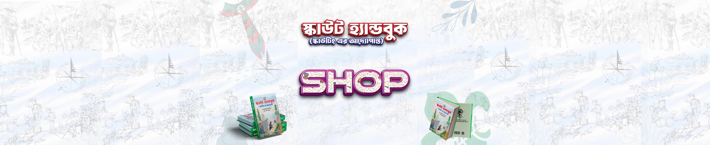

স্কাউটার মোঃ রাকিব হাসান শিপু ও স্কাউটার সামিন রহমানের সংকলিত বই স্কাউটিংয়ের A to Z – “স্কাউট হ্যান্ডবুক”।
জুলাই অভ্যুত্থানে শহীদ শহীদ স্কাউট ব্যক্তিত্ব ও মহান মুক্তিযুদ্ধে অংশগ্রহণকারী স্কাউট ব্যক্তিবর্গের তথ্য
স্কাউটিংয়ের গোড়ার ইতিহাস থেকে শুরু করে বাংলাদেশ ও বিশ্ব স্কাউটিং
তিন শাখার প্রোগ্রাম, অ্যাওয়ার্ড ও ব্যাজ সিস্টেম
দড়ির কাজ, প্রাথমিক চিকিৎসা, অনুমান ও পর্যবেক্ষণ, উদ্ধার কাজ, রোগী বহন ইত্যাদি।
প্রতিটি অধ্যায়ের শেষে সংক্ষিপ্ত প্রশ্নোত্তর যা কাব, স্কাউট ও রোভার স্কাউটদের সর্বোচ্চ সম্মাননা অর্জনে সহায়ক হবে।
📖 বাংলাদেশ স্কাউটস কর্তৃক অনুমোদিত ২৫০ পৃষ্ঠার রঙিন A4 সাইজের হার্ড কভারের এই বইটির আনুষ্ঠানিকভাবে মোড়ক উন্মোচন করেন বাংলাদেশ স্কাউটস-এর আহ্বায়ক জনাব মোঃ এহছানুল হক এবং সদস্য সচিব জনাব মীর মাহবুবুর রহমান স্নিগ্ধ। এ সময় আরো উপস্থিত ছিলেন এডহক কমিটির অন্যান্য সদস্যবৃন্দ, যুগ্ম আহবায়কগন, বাংলাদেশ স্কাউটসের নির্বাহী পরিচালক ও প্রফেশনাল স্কাউট এক্সিকিউটিভগণ।
বইটিতে ব্যবহৃত বিভিন্ন তথ্য ও রেফারেন্স বুক এই ওয়েবসাইটটি তে পাওয়া যাবে। সেই সাথে বইয়ের কিউআর কোড স্ক্যান করে ব্যবহারিক বিষয়গুলো দেখার জন্য ইউটিউব চ্যানেল ভিজিট করা যাবে। এরই মাধ্যমে কাব স্কাউট ও রোভাররা স্কাউটিং কে আরো ভালোভাবে জানার ও বুঝার সুযোগ পাবে。